01

PROJECT GOAL
공차 홈페이지의 제작 목표는 음료 브랜드와 소비자간의 소통을 강화하는데 중점을 두었습니다. 소비자의 경험을 극대화 하기 위해 스크롤을 이용한 동적 효과를 이용해, 페이지를 탐색할때 시작적 즐거움을 주는 요소를 추가하였습니다. 또한, 가맹점 개설 문의에 대한 접근성을 높여, 사용자가 가맹 관련 정보를 빠르게 확인하고 문의할 수 있는 기능을 추가했습니다.

UI DESIGN PRINCIPLE
:STYLE GUIDE
FONT
'Maruburi'는 부드럽고 유연한 곡선이 특징인 폰트로, 공차 브랜드의 따뜻하고 친근한 이미지를 잘 나타냅니다. 공차는 신선한 재료와 정성을 담은 티 음료를 제공하는 브랜드이기에, 이런 부드러운 타이포그래피는 고객들에게 편안한 인상을 주고, 음료와 어울리는 감성을 전달합니다. 'NanumSquareNeo'는 안정적인 가독성을 제공하기 때문에, 정보를 명확하고 신속하게 전달할 수 있는 장점이 있습니다. 이 두 폰트를 사용하여 공차의 전통과 현대적 감각을 모두 표현하였습니다
COLOR
공차의 대표 컬러인 #C30E2E는 브랜드의 열정과 에너지를 상징합니다. 붉은색은 강렬하고 생동감 있는 색상으로, 공차가 제공하는 정성스럽고 신선한 티 음료의 이미지를 효과적으로 전달합니다. 회색 계열의 색은 전문성과 신뢰성을 강조하고 있습니다. 이 색상들의 사용으로 공차의 전통적이면서도 현대적인 이미지를 조화롭게 표현하고 있습니다.
SUB
NanumSquareNeoExtraBold MaruBuriExtraLight MaruBuriExtraLighCOLOR
#C30E2E
#F3F2E8
#575757
#ffffff
OVERVIEW
공차는 대만에서 시작된 티 음료 브랜드로, 전 세계적으로 유명한 버븣티를 비롯해 다양한 티 음료를 제공하고 있습니다. 공차는 차의 종류, 당도, 얼음 양 등을 고객이 직접 선택할 수 있는 맞춤형 시스템을 제공하며, 소비제에게 개별화된 음료를 제공합니다. 현재는 전 세계에 수천 개의 매장을 운영하며, 티 음료 시장에서 꾸준이 확장하고 있는 브랜드 입니다.
어떻게 하면 브랜드의 정체성을 시각적으로 더 명확히 전달할 수 있을까?
다이슨은 혁신과 기술, 디자인을 중요시하는 브랜드입니다. 이번 리뉴얼에서는 다이슨의 브랜드 아이덴티티를 강화하기 위해 세련되고 현대적인 디자인을 적용했습니다. 이를 통해 다이슨의 차별화된 기술력과 제품의 혁신성을 시각적으로 강조하고자 합니다.
AS-IS
제품 정보의 제한
상호작용 요소의 부족
비주얼 및 콘텐츠 품질
TO-BE
제품 홍보에 용이한 제품의 기능들을 함꼐 적어주면서 소비자들이 충분한 정보를 얻을 수 있도록 했습니다.
인터렉티브 요소들을 추가하여 소비자들이 보다 적극적으로 제품을 탐색할 수 있도록 했습니다.
고해상도 이미지와 최신 디자인 트렌드를 반영하여 깔끔하고 세련된 비주얼을 구현하였고, 브랜드의 혁신성을 효과적으로 강조했습니다
WIREFRAME
1920px 기준으로 하여 헤더 / 메인 / 컨텐츠 / 푸터 페이지를 구성 후,
UI Wireframe을 제작하였습니다.


시각적으로 명확하게
전달되는 다이슨의
브랜드 아이덴티티


제품의 대표 기술을 함께 적어주어
소비자들이 충분한 정보를 얻음


소비자와 상호작용하는 인터렉티브 요소